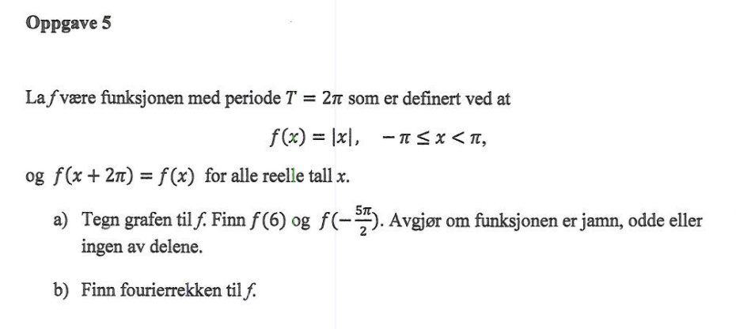
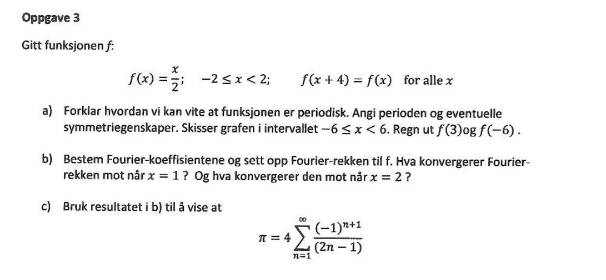
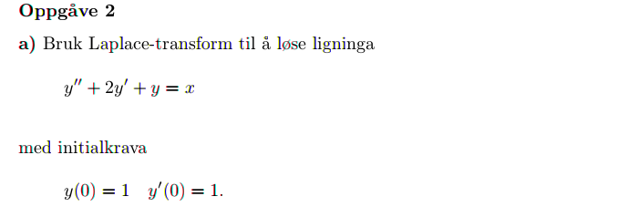
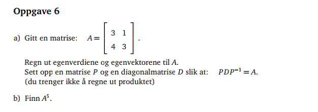
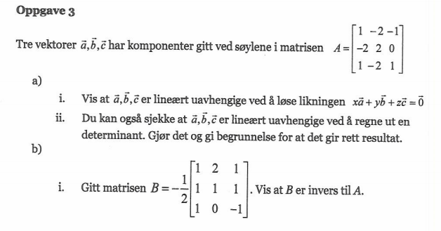

MAT106 for ELK og KOM
Uke 16
11.05.2016
Alexander Lundervold
institutt for data- og realfag
På mobil? Swipe
Noen tips frem mot eksamen
Jobb hardt!
Noen tips frem mot eksamen
- Løs oppgaver! Eksamensoppgaver, innleveringsoppgaver, ukeoppgaver, eksamensrepetisjonshefte
- Skaff deg en oversikt over pensum.
Tips: lag stikkordliste - Jobb gjennom tidligere eksamenssett. 4 timer, kun kalkulator og formelark
- Dann kollokviegrupper. Diskuter pensum og oppgaver.
- Spør om hjelp
- Sjekk alternative kilder. Se forelesningsloggen på itsLearning. MAT106x.
Eksamensrepetisjonshefte

Fasit til oppgavene om komplekse tall ligger på itsLearning
Repetisjon
{kind=link}
Fourierrekker
Se også MAT106x på AkademiXFourierrekker
Dersom $f$ er en $2L$-periodisk funksjon er fourierrekken til $f$
$$a_0 + \sum_{n=1}^{\infty} \left(a_n \cos\left(\frac{n\pi x}{L}\right) + b_n \sin\left(\frac{n\pi x}{L}\right)\right),$$der koeffisientene $a_0, a_1, a_2, \dots$ og $b_1, b_2, b_3, \dots$ er gitt ved følgende integraler
Fourierrekker
\begin{align*} a_0 &= \frac{1}{2L} \int_{-L}^L f(x) \mbox{d}x \\\\ a_n &= \frac1L \int_{-L}^L f(x)\cos\left(\frac{n\pi x}{L}\right) \mbox{d}x \\ \\ b_n &= \frac1L \int_{-L}^L f(x)\sin\left(\frac{n\pi x}{L}\right) \mbox{d}x \end{align*}
Fourierrekker
Husk: Dersom $f$ er jamn eller odde kan vi spare litt tid når vi løser integralene.

NB: Ikke alle funksjoner er odde eller jamne; de fleste er hverken-eller.
FOA162, Høst 2010. Oppgave 5
{kind=link}
Plot av første par ledd i fourierrekken:
plot pi/2 - (4/pi) * (cos(x) + cos(3x)/3 + cos(5x)/5 + cos(7x)/7 + cos(9x)/9), x=-3pi..3piFOA162, Vår 2010. Oppgave 3
{kind=link}
Plot av første par ledd i fourierrekken:
plot 2/pi * ( sin(1*pi*x/2) - 1/2 * sin(2*pi*x/2) + 1/3 * sin(3*pi*x/2) - 1/4 * sin(4*pi*x/2)), x=-6..6Bølger og frekvenser
Siste innspurt mot eksamen
- Fredag 13. mai: En oppgave om laplace, en oppgave fra lineær algebra (matriseregning). Deretter spørretime.
- Onsdag 18. mai: Auditorium E123 er reservert fra 10 til 16. Jeg er til stede fra klokken 10 til 11. Studass til stede fra 12 til 14.
- MATTEEKSPRESSEN: Tlf. 95931335. Send SMS/MMS med spørsmål, eller tilkall meg for hjelp der du sitter.
- Eksamen fredag 20. mai. Sjekk StudentWeb for å verifisere at du er oppmeldt. Ta kontakt med eksamenskontoret dersom problemer.
Laplacetransformasjonen
Se også MAT106x på AkademiX
H2013, oppgave 2 a
{kind=link}
Løs startverdiproblemet
\[y'' - 5y' + 6y = 6t-4, \quad y(0) = 1,\,\, y'(0) = 3\]
ved å bruke Laplacetransformasjonen
Lineær algebra
Se også MAT106x på AkademiX
H2015, oppgave 6
{kind=link}
V2012, oppgave 3
{kind=link}